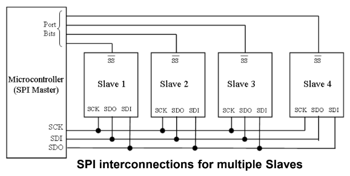
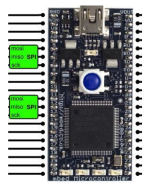
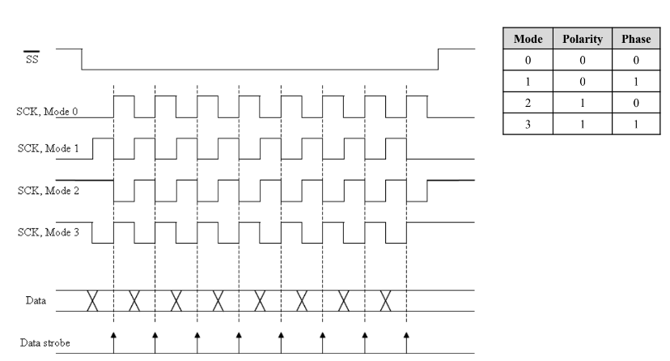
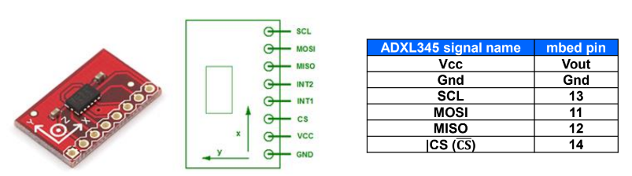
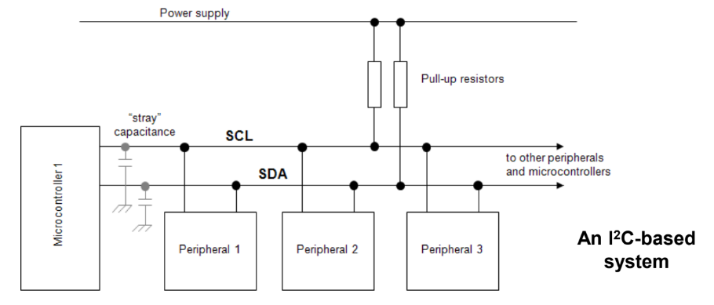
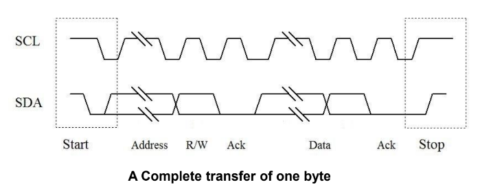
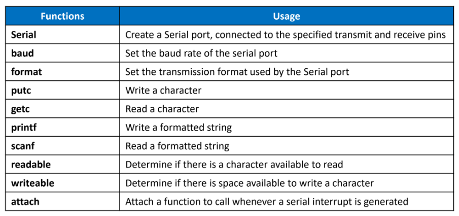
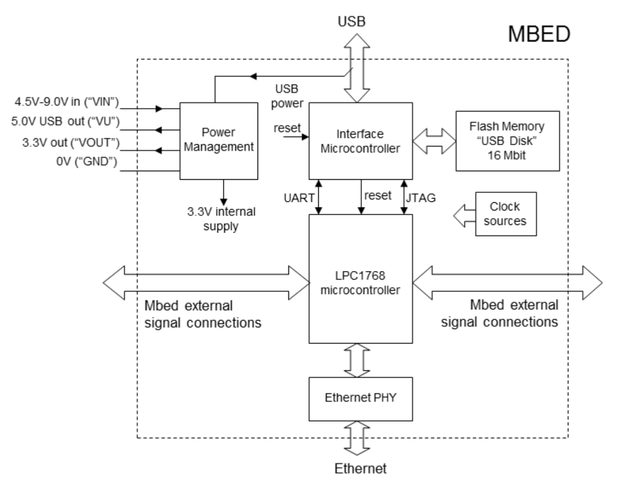
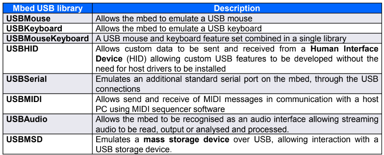

Embeded System Midterm
Chapter 1 : Embeded, MCU and ARM
Embeded system คือ Product Controlled by Computer for Example
- Vending Machine
- Washing Machine
- Segway personal transporter
MPU vs MCU MPU ไม่พูดถึงแต่ MCU คือ Computer + Control Functions ประกอบด้วย
- Core
- Memory
- Peripheral
Embeded uses C or C++ ARM (Advance RISC Machine Ltd.) เจ้านี้ขาย Processor IP แบบ RISC (Reduced Instruction Set Computer) มีข้อดีเรื่อง
- 1 binary word instruction
- instruction takes same amout of time
- Piplining
Chapter 2 : Introducing to MBED
MBED LPC1768 เป็น MCU ที่ต่ออุปกรณ์เสริมมาเรียบร้อยแล้ว (เรียกได้ว่าพร้อมใช้)
MBED Board Architecture
- LPC1768 MCU
- Signal Pins
- USB Interface MCU
- 16Mbit USB Disk (เอาง่ายๆ จะอัพโค้ดแบบปกติ หรือว่าจะเอา Compiled ใส่ USB Disk ก็ได้)
/* Program Example 2.1: Simple LED flashing */
#include "mbed.h"
DigitalOut myled(LED1);
int main() {
while(1) {
myled = 1;
wait(0.2);
myled = 0;
wait(0.2);
}
}
Chapter 3 : Digital IO
ไอบอดเวรนี่มี 26 Pin ที่ใช้เป็น Input และ Output ได้ ก็คือตั้งแต่ Pin 5-30
โค้ดมีตามนี้
#include <mbed.h> // ก่อนใช้ก็ Include ก่อน
/** Digital IO */
DigitalOut myLED(LED1);
DigitalIn myButton(btn1);
BusIn busInput(P0,P1,P2); // ใช้หลาย Input Pin พร้อมกัน Up to 16 pins
// ตอนรับค่ารับเป็น int ที่แต่ละ bit represent แต่ละ pin
BusOut busOutput(P0,P1,P2) // ใช้หลาย Output Pin พร้อมกัน Up to 16 pins
// ตอนสั่งจะสั่งเป็น int ที่แต่ละ bit represent แต่ละ pin
wait(s);
wait_ms(ms);
wait_us(us);
(GPIO ของชิพจริงไม่มี State Undefined นะครับ)
ว่าด้วยเรื่องของ LEDs
สรุปง่ายๆ คือ LED มันรับกระแสได้จำกัดซึ่งถ้าเราจ่ายแรงดันมากเกินไปอาจะทำให้กระแสไหลเกินจน LED ขาดได้
มันมีอยู่ 2 แบบคือ
- Source จะจ่ายออกจากขา IO
- Sink จะดึงกระแสเข้ามาในขา IO
ว่าด้วยเรื่องการต่อ Switch Input
7-Segment
ตัวเลข ที่เราคุ้นเคย ใน example ใช้ BusOut แต่ต้องโน้ตไว้อย่างนึงว่า Ouput Pin แต่ละ Pin มีค่าความต้านทานภายใน 100Ω และ LED Segment มีแรงดันตกคร่อมประมาณ 1.8V เพราะงั้นเวลาคำนวนกระแสต้องคิดค่า R ภายในด้วยเช่นถ้า
\(I = 4mA\)
\(V_{led} = 1.8V\)
\(V_{pin} = 3.3V\)
\(R_{internal} = 100Ω\)
ดังนั้น R จะเท่ากับ \(\dfrac{3.3 - 1.8}{4m} - 100 = 275Ω\)
/*Program Example 3.7: Simple demonstration of 7-segment display. Display
digits 0, 1, 2, 3 in turn.
*/
#include "mbed.h"
BusOut display(p5,p6,p7,p8,p9,p10,p11,p12); // segments a,b,c,d,e,f,g,dp
int main() {
while(1) {
for(int i=0; i<4; i++) {
switch (i){
case 0: display = 0x3F; break; //display 0
case 1: display = 0x06; break; //display 1
case 2: display = 0x5B; break;
case 3: display = 0x4F; break;
} //end of switch
wait(0.2);
} //end of for
} //end of while
}
Control Larger Load
ใช้ BJT หรือ MOSFET
แต่มีข้อระวังตอนขับโหลดที่เป็นแบบ Inductive ex. Motor เพราะว่าถ้าตัดไฟจาก Load ประเภท Inductive จะทำให้เกิดสิ่งที่เรียกว่า Back EMF ซึ่งจะทำให้เกิดแรงดันจำนวนมหาศาล ซึ่งอาจจะทำลาย Transistor หรือ MOSFET เราได้
Chapter 4 : Analog Output
DAC (Digital to Analog Converter)
Basicly convert binary input to analog output
Output Voltage of DAC are determined by
\(Vo = \dfrac{D * V_{ref}}{2^n}\) Vo : Output Voltage D : Digital Input Vref : Reference Voltage n : Number of bits
In LPC1768 has 10-bit DAC ก็คือ \(2^{10}\) หรือก็คือ 1024 steps นั่นแหละ
AnalogOut Example
/*Program Example 4.1: Three values of DAC are output in turn on
Pin 18. Read the output on a DVM.
*/
#include "mbed.h"
AnalogOut Aout(p18); //create an analog output on pin 18
int main() {
while(1) {
Aout=0.25; // 0.25*3.3V = 0.825V
wait(2);
Aout=0.5; // 0.5*3.3V = 1.65V
wait(2);
Aout=0.75; // 0.75*3.3V = 2.475V
wait(2);
}
}
นอกจากนี้ยังมี write write_u16 read และ Operator = เพื่อใช้สำหรับอ่านและเขียนค่าไปที่ AnalogOut ด้วย
PWM (Pulse Width Modulation)
Basicly Square Wave with variable On-Time and the ratio of On:Off time is called Duty Cycle
 ถ้าอยากได้แรงดัน Analog จาก PWM สามารถใช้วงจรในการเฉลี่ยค่าของ Pulse ได้เช่น RC Low pass filter
ถ้าอยากได้แรงดัน Analog จาก PWM สามารถใช้วงจรในการเฉลี่ยค่าของ Pulse ได้เช่น RC Low pass filter
PWM on MBED
MBED LPC1768 has 6 PWM Output on pins 21-26
| Functions | Usage |
|---|---|
PwmOut |
Create Object |
write |
Set duty cycle 0.0-1.0 |
read |
Get current Duty Cycle |
period |
Set PWM Period in seconds |
period_ms |
Set PWM period in milliseconds |
period_us |
Set PWM period in microseconds |
pulsewidth |
Set PWM Pulse Width in seconds |
pulsewidth_ms |
Set PWM Pulse Width in milliseconds |
pulsewidth_us |
Set PWM Pulse Width in microseconds |
| operator = | Shorthand for write |
Example
/*Sets PWM source to fixed frequency and duty cycle. Observe output on
oscilloscope.
*/
#include "mbed.h"
PwmOut PWM1(p21); //create a PWM output called PWM1 on pin 21
int main() {
PWM1.period(0.010); // set PWM period to 10 ms
PWM1=0.5; // set duty cycle to 50%
}
ใช้ Software Generated PWM ก็ได้นะ
/*Program Example 4.6: Software generated PWM. 2 PWM values generated in turn, with
full on and off included for comparison.
*/
#include "mbed.h"
DigitalOut motor(p6);
int i;
int main() {
while(1) {
motor = 0; //motor switched off for 5 secs
wait (5);
for (i=0;i<5000;i=i+1) { //5000 PWM cycles, low duty cycle
motor = 1;
wait_us(400); //output high for 400us
motor = 0;
wait_us(600); //output low for 600us
}
for (i=0;i<5000;i=i+1) { //5000 PWM cycles, high duty cycle
motor = 1;
wait_us(800); //output high for 800us
motor = 0;
wait_us(200); //output low for 200us
}
motor = 1; //motor switched fully on for 5 secs
wait (5);
}
}
Servo Control
เอาง่ายๆ สัญญาณ Control เป็น Pulse ที่มี Period 20ms และ width ตั้งแต่ 1-2ms represent 0-180 องศา
Chapter 5 : Analog Input
ADC (Analog to Digital Converter)
Basicly Analog in Digital Out ใช้วัดแรงดัน โดยจะวัดเทียบกับแรงดัน Reference Voltage โดยที่จะมีเสปคประมาณนี้ 1. Range is มันวัดได้เยอะแค่ไหน often minimum is 0V and Maximum value is \(V_{ref}\) 2. Resolution วัดได้ละเอียดแค่ไหน ปกติก็จำนวนเป็น bits เช่นถ้า 10 bits ก็จะวัดได้ \(2^{10} = 1024\) Steps และก็เอามาเทียบกับ Range ก็จะได้ Resolution = \(\dfrac{V_{ref}}{2^n}\) 3. Quantisation คือ Error ที่อยู่ระหว่างแต่ละ Step คำนวนจาก Resolution / 2 เช่น 3.3V 8bit แต่ละ Step ก็จะเท่ากับ \(\dfrac{3.3}{256}=12.89mV\) แล้วก็ \(\div2\) จะได้ \(6.45mV\)

DAQ (Data Acquisition System)
เอาง่ายๆคือเป็นเหมือน Environment ที่มาอยู่รอบๆ ADC เช่น - ก่อนจะวัดก็ต้องมีตัวแปลงสัญญาณนั้นให้เป็นสัญญาณไฟฟ้าซะก่อน เรียกว่า Transducer เช่น Microphone แปลงจาก Audio -> Electrical Signal - ถ้าต้องการวัดสัญญาณหลายที่ในรูปจะมี Multiplexer ไว้เลือกสัญญาณเข้า
Sampling Frequency and Aliasing
Sampling Frequency ก็คือว่าเราอ่านข้อมูลถี่แค่ไหน จบ และก็มี Nyquist Frequency ก็คือต้องมีค่าอย่างน้อย 2 เท่าของสัญญาณที่ต้งการวัด
Analog Input with mbed
LPC1768 has Single ADC with multiplexer and has reference voltage of 3.3V
| Functions | Usage |
|---|---|
AnalogIn |
Create analog Object |
reead |
Read input voltage range from 0.0-1.0 |
read_u16 |
Read in unsigned short in the range (0x0 - 0xFFFF) |
Example
/*This Program is basically a very slow Voltage Buffer
*/
#include "mbed.h"
AnalogOut Aout(p18); //defines analog output on Pin 18
AnalogIn Ain(p20) //defines analog input on Pin 20
int main() {
while(1) {
Aout=Ain; //transfer analog in value to analog out, both
}
}
/*Program Example 5.2: Uses analog input to control PWM duty
cycle, fixed period
*/
#include "mbed.h"
PwmOut PWM1(p23);
AnalogIn Ain(p20); // defines analog input on Pin 20
int main() {
while(1){
PWM1.period(0.010); // set PWM period to 10 ms
PWM1=Ain; // Analog in value becomes PWM duty,
// both are type float
wait(0.1);
}
}
Display Value to the computer
ใช้ Putty เถอะครับ เพื่อเปิด Serial Terminal
ใช้ Object Serial ในการส่งข้อมูล มี Constant น่าสนใจคือ USBTX และ USBRX ซึ่งเป็นขาทีี่ต้องอยู่กับ MCU ที่ Bridge ระหว่าง USB กับ LPC1768
/*Program Example 5.4: Reads input voltage through the ADC, and transfers to PC
terminal
*/
#include "mbed.h"
Serial pc(USBTX, USBRX); //enable serial port which links to USB
AnalogIn Ain(p20);
float ADCdata;
int main() {
pc.printf("ADC Data Values...\n\r"); //send an opening text message
while(1){
ADCdata=Ain;
wait(0.5);
pc.printf("%1.3f \n\r",ADCdata); //send the data to the terminal
}
}
การปริ้นค่าสามารถใช้ pc.printf("abc %d",variable) ได้เลย
Simple Analog sensor
Exploring Conversion Timing
/*Program Example 5.5: Inputs signal through ADC, and outputs to DAC. View DAC
output on oscilloscope. To demonstrate Nyquist, connect variable frequency signal
generator to ADC input. Allows measurement of conversion times, and explores
Nyquist limit. */
#include "mbed.h"
AnalogOut Aout(p18); //defines analog output on Pin 18
AnalogIn Ain(p20); //defines analog input on Pin 20
DigitalOut test(p5);
float ADCdata;
int main() {
while(1) {
ADCdata=Ain; //starts A-D conversion, and assigns analog value to ADCdata
test=1; //switch test output, as time marker
test=0;
Aout=ADCdata; // transfers stored value to DAC, and forces a D-A conversion
test=1; //a double pulse, to mark the end of conversion
test=0;
test=1;
test=0;
//wait(0.001); //optional wait state, to explore different cycle times
}
}
เอาง่ายๆเลย โค้ดนี้อ่านค่า Analog เก็บไว้ในตัวแปร กระพริบ 1 pulse แล้วเอาค่านั้นไปเข้า DAC จากนั้นกระพริบ 2 ครั้งแล้วอ่านใหม่ แล้วทำไมไม่จ่าย High ตอนเริ่ม Low ตอนจบวะ!!!
Chapter 7 Serial Communication
มัน Serial (อนุกรม) เพราะมันส่งข้อมูลทีละ 1 bit ถึงจะช้ากว่า Parallel แต่ก็ดีกว่าในเรื่องใช้สายน้อย
มี 2 แบบคือ Synchronous กับ Asynchronous Serial
- Asynchronous Serial ก็คือ Serial Link ที่ส่งแล้วอาศัยการนับ Timing ของฝั่งส่งและฝั่งรับด้วยตัวเอง เพราะงั้นต้องคุยกันก่อนว่าจะส่งด้วยความเร็วแค่ไหน
- Synchronous Serial ก็คือ Serial ที่มี clock เพื่อใช้ในการ Synchronized Frame ของข้อมูล
Basics of Serial Port : the shift register จริงๆก็แค่รับสัญญาณ Clock และ Data ที่เป็น Serial แล้วแปลงออกมาให้เป็น Parallel
A Simple Serial Link อันนี้คือ Synchronous Link ที่มีแค่ Clock, TX (SDO), RX(SDI) ปกติจะต่อจากขาส่งไปรับ และจากขารับไปส่งแต่จะมี Role เข้ามาเกี่ยวข้องคือ Slave กับ Master ซึ่งก็ต่างกันแค่ Master เป็นคน Generate สัญญาณ Clock (เพราะงั้นถ้า Master ไม่ถาม Slave ไม่ต้องพูดดด)
SPI (Serial Peripheral Interface)
Created by Motorola and National Semiconductors การเชื่อมต่อมี Clock, Data In, Data Out และ Slave Select (SS) ก็คือมี Slave กี่ตัวก็ต่อ SS ไปเท่านั้นเลยอ่ะนะ 
SPI on mbed : Master MBED มี SPI อยู่ 2 Port โดยแต่ละอันจะตั้งเป็น Master หรือ Slave ก็ได้
| Function | Usage |
|---|---|
SPI(mosi, miso, sclk) |
Create SPI Master and configure the Pin |
format(bit,mode) |
configure data mode and data length |
frequency(hz) |
Set SPI Clock Frequency |
write(data) |
Write to the SPI Slave and return the response |

ปกติ SPI จะมี Mode การทำงานอยู่ 4 โหมด (โหมดบอกว่าสัญญาณจะถูกอ่านที่ขาขึ้นหรือลง และบอกว่า Idle Clock เป็น High หรือ Low) ถ้าให้จำง่ายๆ
| Mode | Idle Clock | อ่านสัญญาณตอนไหน |
|---|---|---|
| 0 | 0 | ↑ ขึ้น |
| 1 | 0 | ↓ ลง |
| 2 | 1 | ↑ ขึ้น |
| 3 | 1 | ↓ ลง |

SPI Master Example
#include "mbed.h"
SPI ser_port(p11, p12, p13); // mosi, miso, sclk
char switch_word ; //word we will send
int main() {
ser_port.format(8,0); // Setup the SPI for 8 bit data, Mode 0 operation
ser_port.frequency(1000000); // Clock frequency is 1MHz
while (1){
switch_word = 0xA1; //set up word to be transmitted
int readBack = ser_port.write(switch_word); //send switch_word and read in readBack
wait_us(50);
}
}
SPI on mbed : Slave
| Functions | Usage |
|---|---|
SPISlave(mosi,miso,sck,ss) |
Create a SPI slave connected to the specified pins |
format(bit,mode) |
Configure the data transmission format |
frequency(hz) |
Set clock Frequency (เพื่อ?) |
receive() |
Flag ว่ามีข้อมูลมามั้ย |
read() |
Return data |
reply() |
ถ้ารอบหน้า Master ทักมาจะตอบว่าไงมั้ย |
ADXL345 Accelerometer 
Evaluating SPI
ข้อดี
- เร็ว
- ถูก
- มีประสิทธิภาพ
ข้อเสีย
- ไม่มีการ Ack ไม่รู้ว่าส่งไปเขาได้รับครบถูกมั้ย
- ไม่มี Addressing เพราะงั้นต้องใช้ SS Line สำหรับทุก Slave
- ไม่มี Error Checking ก็ถ้ามีการรบกวนคือไม่มีทางรู้
I2C (Inter-Integrated Circuit)
I2C เป็น Serial แบบ Master/Slave อยู่ มีสาย 2 เส้นคือ SCL/SDA (Clock, Data) แบบ Open-Collector ซึ่งจะมี Pullup Resistor ก็คือแต่ละ Node จะ Force Bus เป็น 0 ได้แต่ Force ให้เป็น 1 ไม่ได้
และแน่นอน พอเป็น Master/Slave ก็จะทำให้ Master ต้องเป็นคนเริ่ม Transfer data (Master ไม่ขอก็ให้ Slave อยู่เงียบๆ)

Start Condition เริ่มตอน SDA↓ ตอนที่ SCL ยัง High
Stop Condition เริ่มตอน SDA↑ ตอนที่ SCL ยัง High
ตอนส่งข้อมูลจะเริ่มด้วย (7-bits) Address ก่อนแล้วตามด้วย \(Read/\overline{Write}\) Bit จากนั้น Slave จะ ACK แล้วเริ่มส่งข้อมูล
Address ของ I2C เป็น Address แบบ 7 bits แต่ตอนส่งต้อง left shift ไป 1 (เพื่อ Reserved Bit ซ้ายสุดไว้สำหรับ \(R/\overline{W}\) ยังไงล่ะ)
ปกติข้อมูลจะส่งเป็น Byte จะส่งกี่ Byte ก็ได้ ไม่มี Limit แต่จะมี 1 bit acknowledge ทุก Byte ที่ส่ง

I2C on mbed
MBED มี SPI อยู่ 2 Port โดยแต่ละอันจะตั้งเป็น Master หรือ Slave ก็ได้
uint8_t address; // Slave Address
I2C i2c_port(p9, p10); // P9 = SDA, P10 = SCL
// ถ้าจะ Write จะเขียนแบบนี้
i2c_port.start();
i2c_port.write(address << 1);
i2c_port.write(data);
i2c_port.stop();
// ถ้าจะ Read จะเขียนแบบนี้
i2c_port.start();
i2c_port.write(address << 1 | 0x01); // ต้องเติม 1 เข้าไปที่ท้าย address เพื่อระบุว่าเป็น Read
int read = i2c_port.read(); // อยากได้หลาย Byte ก็ For เอามั้ง555
i2c_port.stop();
ข้อดีคือ Reliable
ข้อเสียคือช้า
Asynchronous Serial
ด้วยความ Asynchronous แน่นอน ไม่ต้องการ Clock แต่ความเร็วต้องตกลงกันก่อนนะ ไม่งั้นคุยกันไม่รู้เรื่อง ในแต่ละ Byte/Word จะมี Start และ Stop Bit
การสื่อารแบบนี้เรียกว่า UART (Universla Asynchronous Receiver/Transmitter) มีสาย 1 เส้นเพื่อส่ง(TX) และ 1 เส้นเพื่อรับ(RX)
UART on mbed
MBED มี UART อยู่ 4 ช่องตามนี้ (อันที่เขียนว่า Serial)


ถ้าจะต่อกับ PC จะมี Constant ที่ใช้กำหนดใน Serial ได้คือ USBTX USBRX ก็จะใช้ประมาณนี้ Serial pc(USBTX,USBRX)
USB (Universal Serial Bus)
ก็ตามชื่อ Universal ถอดเสียบโดยไม่ต้องตั้งค่าอะไร (Plug and Play)
บอร์ด MBED มี USB 2 Port แต่มี Peripheral แค่พอร์ตเดียวนะครับ อันนึงเอาไว้โปรแกรม,จ่ายไฟและ Serial ส่วนอีกอันสามารถใช้เป็น USB Device ได้

USB ทำตัวเป็น Mouse, Keyboard, Serial, MIDI, Audio, USBMSD
